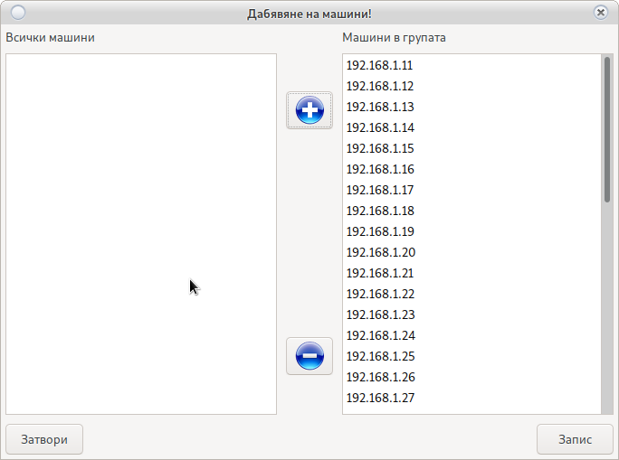
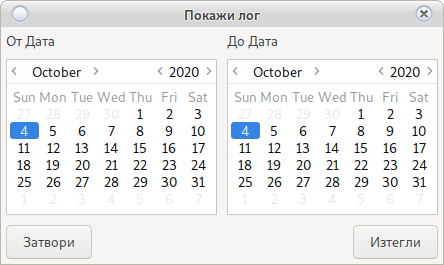

Вход в Джакпот Сървър
Изисква стабилна интернет връзка
С цел защита, цялата комуникация минава пред Редирект Сървър

Потребител: root
Парола: 123456
Важно!
След вход, създайте свой потребител и премахнете __root__
Потребителя за вход в Джакпот Сървъра не зависи от потребителя на Системата за отчет
Основен прозорец
Основен прозорец на програмата за настройки.

Машини
Въвеждане на нова машина в Джакпот Сървъра
За добавяне или промяна на машините от Системата за отчет в сървъра

Промените няма да влязат в сила докато не бъдат записани в сървъра
Двоен клик на машина
Дава информация за машината и проверява наличие на връзка с Джакпот Сървър
Добави
За донавяне на нова машина към Джакпот Сървър
Погледнете IP адреса на SMIB контролера и на кой номер машина в зала отговаря в Начален Екран, ще се наложи да го въведете.

Въведете нужната информация.
Не използвайте опцията механични броячи ще бъде премахната в бъдещи версии.
Използвайте бутона Запис
Редактирай
Редактиране на съществуваща машина
Изберете машина която искате да редактирате и използвайте бутона Редактирай
Променете нужната информация.
Не използвайте опцията механични броячи ще бъде премахната в бъдещи версии.
Използвайте бутона Запис)
Изтрий
Премахва машина от Джакпот Сървър
Изберете машина и натиснете бутона Изтрий
Помощ
Отваря текуща документация
Процент
Намалява отчисленията на SMIB контролера към всички групи
При стойност 0,8 и игра на 1 лев (100 кредита) сървъра ще направи отчисление на 80 кредита.
Изключи игра
Избраната игра няма до отчислява на Джакпот Сървър
Пример: Ролетка
Визуализации
Настройки на визуализации

Визуализациите могат да участват само в една група мистерии
Свободните визуалиции не се използват и могат да бъдат добавени в нова група.
Моля освободете визуализация преди да я добавите в друга група
Добави
Нова и свободна визуализация. Тя може да бъде използвана за нова група или добавена в съществуваща.
Възможно е да се наложи рестарт на новата визуализация при инициализиране.
Изтрий
Премахва избраната визуализация.
Уверете се, че групата няма да остане без визуализации.
Аудио Тест
Изпраща сигнал за тест на звук към избраната визуализация.
Помощ
Отваря текуща документация
Рестар
Рестартира избраната визуализация
В разработка.
Възможно е да не работи
Групи
Настройки на групи от мистерии. Джакпот Сървър няма ограничение в броя на групите.
Групи тип класическа игра могат да съдържат до 5 нива.
Групи тип времева игра могат да съдържат до 2 нива
Групи тип бомби нямат ограничение в броя на нивата, но нямат и собственна визуализация. Просто изпращат сигнал за падане към визуализация заета от друга група.

Добавяне на нова група
Използвайте бутона добави. Имената са свободни, но трябва да бъдат уникални.
Веведете име за разпознаване и изберете тип на игра.
Използвайте бутона Запис
Новата група ще се появи в основния прозорец.
Визуализация в група
За добавяне на нова визуализация в групата използвйте десен бутон върху името на групата.

Бутон добавя визуализация в група
Бутон  премахва визуализация от група
премахва визуализация от група
Добави машина в група
За добавяне на машина в групата използвйте десен бутон върху името на групата.
Бутон добавя визуализация в група
Бутон премахва визуализация от група
Централни настройки на група
Това е настройка която се използва в случай, че не е добавена индивидуална настройка на ниво

Задържане в %
При 40% мистерията ще задържи 40 % от разликата между Начална и Крайна стойност ако не е указано друго в самото ниво.
Активна
Ден и Час в който групата от мистерии да е активна. В останалото време е заключена и не върти.
Прогресивно забавяне
Колкото повече се качва мистерията, толкова по-бавно отчислява.
Отчисление по минимален бет
При зададен Минимален BET за падане, мистерията няма да отчислява ако играта е слаба от минималния BET
Добави ниво
Използвайте десен бутон върху името на групата
В зависимост от избрания тип игра се делят на три типа
Класическа игра
Внимание!
В състезание, при неактивност на играч за над 3 минути
Сървъра ще премахне играча от участниците и ще занули целия натрупан от него bet
-
Въведете уникално име за разпознаване
-
База е сумата от която ще започне мистерията при инициализация
След падане към базата ще добави стойноста на натрупания hiden
При инициализация да зайате начална стойнос по желание в противен случай мистерията ще стартира със сума 0
Ако не искате да имате Начална стойност, след запис в сървъра отворете в режим редактиране и направете базовата сума 0
-
Задържане в % е задържането на определен % преди падане
Ако въведете стойност 40 при мистерия от с граници 100-200 то мистерията ще падне след 140 лева.
Оставете 0 за деактивиране на опцията
Ако процент на задържане е настроен в настройки на група, а тази опция е деактивирана ще бъде използвана настройката на група.
Тази опция е с по-голям приоритет, в случай на активиране настройката на група ще бъде игнорирана. -
От сума
Сумата при която мистерията ще влезе в активен за падане режим
-
До сума
Сумата която мистерията да не надвишава
-
Отчисление в %
1 осначава 1% на 100 кредита = 1 кредит
при коефициент 0,01 един кредит = 0,01 стотинка
Погледнете настроения коефициент на машината.
Внимание!
При машини с коефицен различен от 0,01 мистерията няма да падне в кредита,
поради невърможност да бъде изплатена цялата сума.
Изплатете сумата на ръка! -
Скрит %
Процент за отчисление на скрита hiden стойност
1 осначава 1% на 100 кредита = 1 кредит
при коефициент 0,01 един кредит = 0,01 стотинка
Погледнете настроения коефициент на машината. -
Класическа мистерия
След достигане на случайна сума, мистерията ще падне в кредита на машината
-
Състезателна мистерия
След достигане на случайна сума, мистерията ще влезе в състезателен режим.
Ще обяви стойност за падне.
Всички състезатели започват от 0
Състезателите с най-много натрупан bet ще се покажат на таблото
След достигане на предварително обявената сума, сървъра ще вземе решение кой е печелившия играч.Внимание!
Само играчи покачани на таблото имат шанс за печалба
Не е задължително натрупалия най-голям bet да е печеливш.
Натрупания бет само увеличава шанса.``` Общ Bet = 100 Общо играчи = 3 Играч 1 бет = 50 Играч 2 бет = 30 Играч 3 бет = 20
Играч едно има 50% шанс за печалба. ```
-
Рейндж в състезание
Две суми между които ще се избере сума която ще се довави към сумата на мистерията при влизане в състезание.
Внимание!
Възможно е мистерията да превизи сумата зададена в полето До сумаСума до = 100 Мистерията влиза в режим състезание = 90 Добавя случайна стойност между рейндж в състезания: От 10 До 50 Избира случайна стонност 20 Обявява падане на 110 лева* Брой играчи в състезаниеОт 2 до 5 играча на таблото
-
X2
В определен интервал от време сумата на мистерията ще се умножи по 2
Внимание!
При стоиност на мистерия 100 и активна опция от 19 до 20 часа:
Ако мистерията падне в часовия интервал то нейната стойност ще бъде 100*2 -
Минимален бет
Не се използва в състезание. Това е минималната сума на която трябва да върти играч, за спечелване на мистерия.
-
Задължителна карта
Изисква картов момул.
При липса на клиентска карта мистерията не отчислява.
Времева игра
Това е игра падаща по време и няма горна граница на натрупаната сума.
Максимален брой нива 2.
Внимание!
Мистериите от времеви тип могат да паднат замо веднъж в посочения интервал от време
-
Име
Името трябва да бъде уникално
-
Период
-
Дневна
Мистерията ще се активира всеки ден в посочения интервал от време
-
Седмична
Изберете дните в които желаете мистерията да се активира
-
-
Стойност
Това е стойност от която мистерията ще започва винаги след падане.
-
От Час
Час в който мистерията да влезе в режим Активна
-
До Час
Час в който мистерията да влезе в режим Неактивна
-
Фиксирана стойност
Мистерията не се трупа. Пада обявената стойност.
-
С натрупване
Мистерията се трупа с процента за отчисление
Внимание!
Ако мистерията не падне в посочения интервал, нейната стойност няма да бъде занулена.
Ще бъде прехвърлена в следвашия интервал от времеДен едно начална стойност = 50 лева В края на ден 1 натрупано = 10 лева Ден 2 начална стойност = 60 лева Край на ден 2 натрупано = 50 лева Ден 3 начална стойност = 110 лева Падане и край на ден 3 Ден 4 начална стойност = 50 лева -
Минимален бет
Бет над който трябва да играе играч за спечелване на мистерията.
Бомби
Разликата с Времева игра е:
-
липсата на ограничение в броя на нивата
-
Не изисква собствена визуализация
-
Часовите интервалите могат да съдържат и минути
18.15 = 6 часа и 15 минути.
Помощ
Отваря текущата документация
Събития
Справки за паднали мистерии

Погледни Справки
Сървър
Информация за сървъра и активиране на наемен сървър
Активирай
Удължава дата на работа на наемен сървър.
Свържете се с Grigor Kolev
CRC
Изчислява и проверява дали CRC на сървъра отговаря на версията регистрирана в ДКХ
Всяка не регламентирана промяна ще предизвика блокиране на Джакпот Сървъра
Помощ
Отваря текущата документация
Потребители
Управление на потребители на Джакпот Сървъра.
Потребителите на Джакпот Сървъра не зависят от потребителите на системата
Добави
Добавя нов потребител
Премахни
Изберете потребител за премахване и използвакте бутона Изтрий
Внимание!
Премахване на всички потребители или забравена парола
няма да попречат на работата на сървъра.
Но достъп за настройки ще бъде отнет без възможност за възтановяване.
Помощ
Отваря текущата документация
Опресни
Изтегля нужната информация от сървъра за промяна в настройките
Внимание!
Ако не сте сигурни в настройките които сте направили
Ореснете повторно. Това ще премахне всички промени.
Внимание!
Уверете се, че имате стабилна интернет връзка със сървъра.
При грешен запис на информация, опитайте повторно записване
Внимание!
Информацията се предава чрез технология __Ключ, Стойност__
Всеки ключ трябва да бъде запасен в и цял или няма да бъде записан.
При прекъсване в комуникацията е възможно една промяна да се запише, друга не.
Препоръчваме промени на сървъра от __локална мрежа__
Запиши
Записва всички промени в сървъра.
Внимание!
Не правете промени в сървъра при интензивна игра
Задръж
Спира въртенето на сърчъра.
Всички мистерии ще спрат отчислението
Пусни
Пуска въртенето на сървъра.
Всички мистерии ще започнат да отчисляват.
Архивирай
Създава архив на информацията от Джакпот Сървъра
Моля използвайте тази опция, тя не е поставена случайно.
Може да направите архиви в за много казина, но само последния за едно казино ще е активен.
Зареди
Зарежда информация от създаден архив.
Помощ
Отваря текущата документация
Изход
Изход от програмата и връчане в прозорец за вход